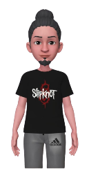
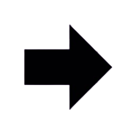
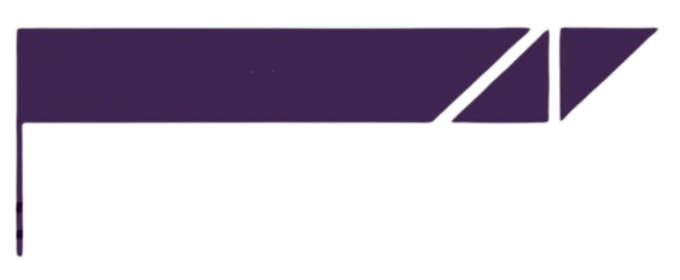

Acerca de mí
Soy un programador creativo, siempre buscando mejorar y aprender nuevas tecnologías. Me adapto rápido, trabajo bien en equipo y disfruto enfrentando nuevos retos. Busco crecer y usar la tecnología de forma innovadora.


Proyectos
Descripción
PetMedico es un sitio web para una veterinaria ficticia, pensado para mejorar la experiencia de clientes y veterinarios, facilitando la gestión de citas y el acceso a la información médica de las mascotas.
Tecnologías utilizadas:
Usé React y Tailwind CSS para crear un diseño limpio y fácil de usar. El backend lo desarrollé con Node.js y TypeScript para asegurar que todo sea seguro, rápido y escalable.
Descripción
Este proyecto consistió en conectar una base de datos en la nube, alojada en un servidor de Azure, para gestionar de manera eficiente los datos
Tecnologías utilizadas:
Azure Database for MySQL: Servicio de base de datos en la nube que asegura un buen rendimiento y alta seguridad. Terminal y MySQL CLI: Herramientas usadas para administrar y hacer consultas directamente a la base de datos.
Descripción
Fue un proyecto grupal donde desarrolló un sitio web para mostrar las rutas de transporte en Zacualtipan.
Tecnologías utilizadas:
HTML, CSS y JavaScript: Herramientas que utilicé para diseñar y darle interactividad al sitio web, asegurando una experiencia fácil y accesible para los usuarios.